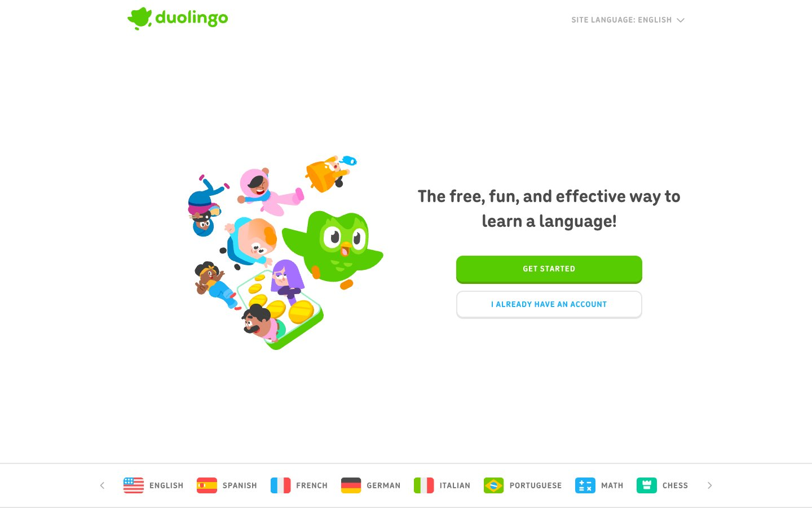

Duolingo 的 Design.md 主题展示，围绕教育服务、消费品牌、公共服务、浅色界面组织页面。
Explore Duolingo's light Other design system: Duolingo Green #58cc02, Background Green Accent #d7ffb8 colors, din-round, feather typography, and DESIGN.md...

#58cc02: #58cc02#d7ffb8: #d7ffb8#3c3c3c: #3c3c3c#000000: #000000#100f3e: #100f3e#ffffff: #ffffff#777777: #777777#4b4b4b: #4b4b4b#042c60: #042c60#e5e5e5: #e5e5e5#1cb0f6: #1cb0f6#a5ed6e: #a5ed6efontFamily: [object Object]fontSize: [object Object]lineHeight: [object Object]letterSpacing: [object Object]control: 12pxcard: 12pxpreview: 12pxxs: 8pxsm: 16pxmd: 24pxlg: 40pxsection: 64px